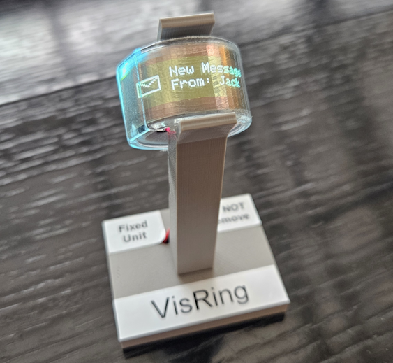
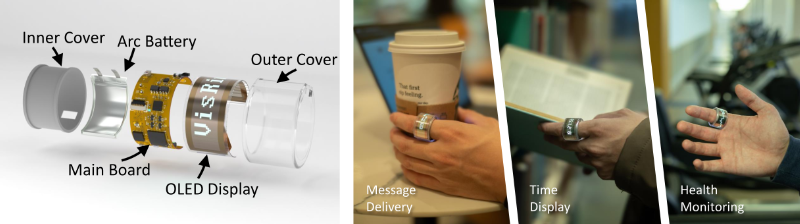
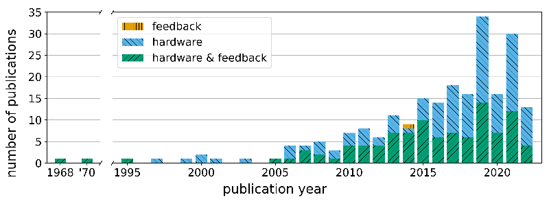

Publications
2026
2025

 Demonstration of VisRing: A Display-Extended Smartring for Nano Visualizations
Demonstration of VisRing: A Display-Extended Smartring for Nano Visualizations
*contributed equally
ACM Symp. User Interface Software and Technology Adjunct (2025)

VisRing: A Display-Extended Smartring for Nano Visualizations
*contributed equally
ACM Symp. User Interface Software and Technology (2025)
2024

Sitting Posture Recognition and Feedback: A Literature Review
Conf. Human Factors in Computing Systems (2024)